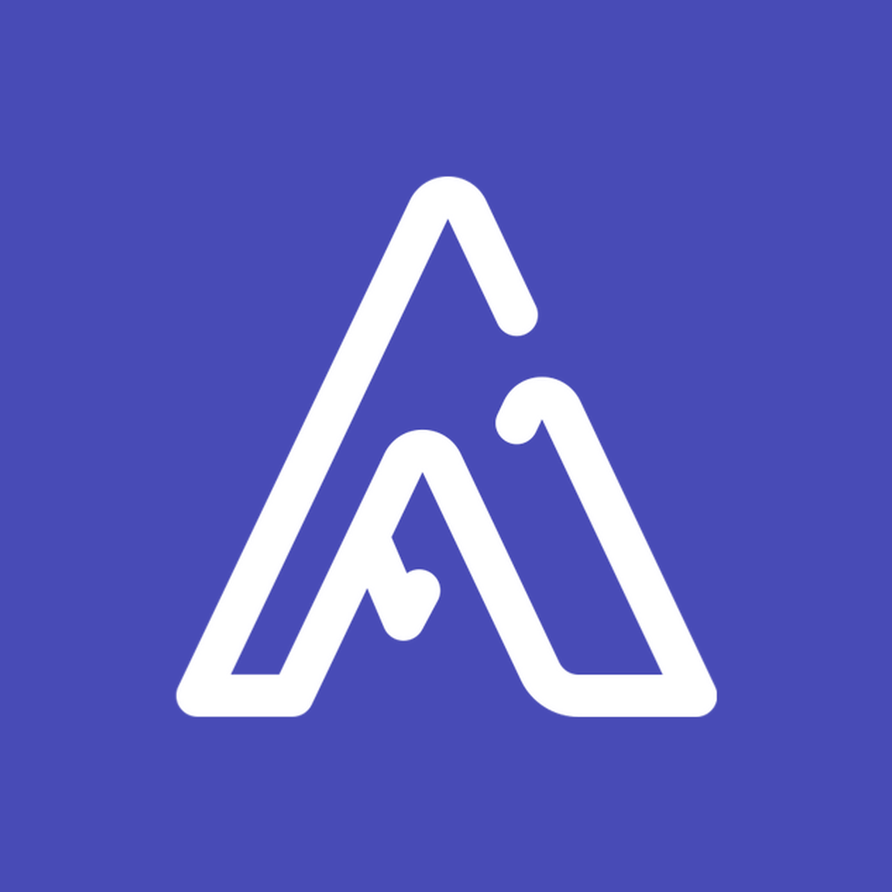

Made for school, not shipments
Home dashboard with customizable sections. Hour-based planner. Monthly calendar with task dots. Digital ID you can flip and share. Projects, internships, certifications, and work history that feed a résumé.

AnviLabsiOS 17+ · SwiftUI · Firebase
Track Ed is AnviLabs’ flagship iOS app (open-sourced as GradMate). It is a student productivity home: natural-language planning, Pomodoro focus, a shareable digital ID, PDF resumes, career records, and Firestore chat — not a logistics dashboard.
Flagship product
A production iOS app for students: tasks, notes, skills, and career development in one place, with Core Data on device and Firebase in the cloud.
Home dashboard with customizable sections. Hour-based planner. Monthly calendar with task dots. Digital ID you can flip and share. Projects, internships, certifications, and work history that feed a résumé.
Google Sign-In and email/password. New students walk a multi-step profile completion flow. Profiles sync to Firestore. Chat uses participant-based security rules.
Interactive demo
This sandbox mirrors Track Ed’s natural-language planner and Pomodoro focus. It runs in your browser; the real app is native SwiftUI.
Try: “Study SwiftUI at 8pm tomorrow”
Pomodoro with short and long breaks
Work block · 25 minutes, then a break.
Front and back, as in Profile
Tap the card to flip it.
From the Track Ed repo
Daily tasks, skills, and quick actions with user-configurable sections.
Hour-based planning, natural language like “Submit report urgent”, calendar filtering, and custom categories.
Pomodoro work blocks, short and long breaks, sounds via AVFoundation, and progress stats.
Firestore messaging, persistent history, and Firebase Cloud Messaging for new messages.
Front/back ID card, shareable profile, photos via PhotosUI, and guided profile completion.
Projects, internships, certifications, work experience, skills, and PDFKit résumé export.
Productivity trends, career progress, and achievements on a dedicated dashboard.
Persistent theme picker and a semantic palette that follows light and dark appearance.
Engineering
Straight from the public repository — not a generic “enterprise API” slide.
Requirements: Xcode 15+, iOS 17+, Swift 5.9+, a Firebase iOS app, and GoogleService-Info.plist.
AnviLabs
AnviLabs is the home of Track Ed. We design and ship our own software. The next work on the roadmap from the repo includes study assistance, richer notifications, iCloud sync, and shared tasks.
Studio lead: Pradeep Reddy Kumbam.